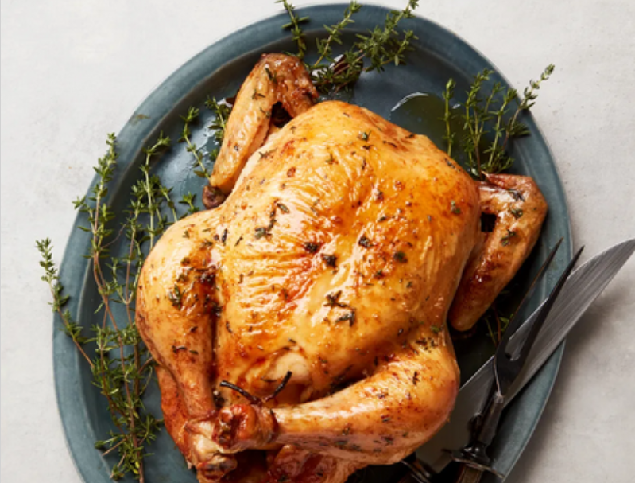

Roast Chicken

This recipe for a simple roasted chicken is courtesy of Thomas Keller and Epicurious. This is a simple recipe that focuses on great technique and few ingredients, so that the chicken itself is the star ingredient. The techniques this recipe uses will result in a moist, juicy chicken with a perfectly crispy exterior, and is perfect for a family supper.
Ingredients
- One 2- to 3-lb. farm-raised chicken, giblets removed and discarded
- Kosher salt, freshly ground black pepper
- 2 tsp. finely chopped thyme (optional)
- Unsalted butter
Steps
- Preheat oven to 450°. Rinse one 2- to 3-lb. farm-raised chicken, then pat dry with paper towels, inside and out. The less it steams, the drier the heat, the better.
- Season chicken cavity with kosher salt and freshly ground black pepper, then truss the bird. Trussing is not difficult, and if you roast chicken often, it's a good technique to feel comfortable with. Trussing helps the chicken cook evenly and makes for a more beautiful roasted bird. Wrap a long piece of kitchen string around the drumsticks at the “ankles” in a figure-eight and pull it taut. Turn chicken over and tie a knot that pulls the tail of the chicken toward the legs. Pull the ends of the string up so that they rest in the joints between the drumsticks and thighs. Pull the string over the wings to hold them close to the body of the chicken, then pull the skin taut over the top of the breasts and tie a double knot at the top of the chicken to secure it. Cut away any excess string.
- Now, salt chicken—I like to rain kosher salt over the bird so that it has a nice uniform coating that will result in a crisp, salty, flavorful skin (about 1 Tbsp.). When it’s cooked, you should still be able to make out the salt granules on the crisp baked chicken skin. Season to taste with freshly ground black pepper.
- Arrange chicken breast side up in a sauté pan or roasting pan. When oven is up to temperature, put chicken in oven. I leave it alone—I don’t baste it, I don’t add melted butter; you can if you wish, but I feel this creates steam, which I don’t want. Roast it until an instant read thermometer inserted into the thickest part of the breast reads 150°–155°, 50–60 minutes. Add the 2 tsp. finely chopped thyme, if using, to pan. Baste chicken with pan juices and thyme, then transfer to a cutting board and let chicken rest 15 minutes.
- Remove kitchen string. Separate middle wing joint and eat that immediately. Remove drumsticks and thighs. I like to take off the backbone and eat one of the oysters, the two succulent morsels of meat embedded here, and give the other to the person I’m cooking with. But I take the chicken butt (a.k.a. tail or pope’s nose) for myself. I could never understand why my brothers always fought over that triangular tip—until one day I got the crispy, juicy fat myself. These are the cook’s rewards. Cut breast down the middle and serve it on the bone, with one wing joint still attached to each. The preparation is not meant to be super elegant. Slather with fresh unsalted butter. You’ll start using a knife and fork but finish with your fingers because it’s so good.